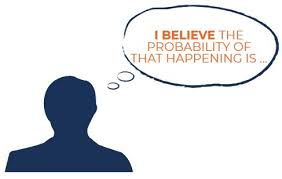

What is Bayesian inference?
![]()

What is probability? The answer to this question is generally acknowledged to be the one that respects the so called Kolmogorov axioms which can be brutally simplified to:
Probabilities are non-negative
Probabilities sum to one
The joint probability of disjoint events is the sum of the probabilities of the events
One of the ways in which Bayesian statistics differs from classical statistics is in the interpretation of probability. Differences in interpretation continue to be controversial, are critical to the distinction between Bayesian and non-Bayesian statistics.
In classical statistics probability is often understood as a property of the phenomenon being studied: for instance, the probability that a tossed coin will come up heads is a characteristic of the coin. Thus, by tossing the coin many times under more or less identical conditions, and noting the result of each toss, we can estimate the probability of a head, with the precision of the estimate monotonically increasing with the number of tosses. In this view, probability is the limit of a long-run, relative frequency; i.e. if \(A\) is an event of interest (e.g. the coin lands heads up) then
\[ \text{Pr}(A) = \lim_{n\rightarrow\infty}\frac{m}{n} \]
is the probability of \(A\), where \(m\) is the number of times we observe the event \(A\) and \(n\) is the number of repetitions. Given this definition of probability, we can understand why classicial statistics is sometimes referred to as frequentist and objectivist. However, historians of science stress that at least two notions of probability were under development from the late \(1600\)s onwards: the objectivist view described above, and a subjectivist view. With regard to the latter, we can consider different ‘degrees’ of belief to interpret probability, ‘from the very neighbourhourhood of certainty and demonstration, quite down to improbability and unlikeliness, even to the confines of impossibility’. For Locke, ‘Probability is likeliness to be true’, a definition in which (repeated) games of chance play no part. For Bernoulli, ‘Probability is degree of certainty and differs from absolute certainty as the part differs from the whole’, it being unequivocal that the ‘certainty’ referred to is a state of mind, but, critically, (1) varied from person to person (depending on one’s knowledge and experience) and (2) was quantifiable. Ramsey and de Finetti, working independently, showed that subjective probability is not just any set of subjective beliefs, but beliefs that conform to the axioms of probability. The Ramsey-de Finetti Theorem states that if \(p_1, p_2, \ldots\) are a set of betting quotients on hypotheses \(h_1, h_2,\ldots\) , then if the \(p_j\) do not satisfy the probability axioms, there exists a betting strategy and a set of stakes such that whoever follows this betting strategy will lose a finite sum whatever the truth values of the hypotheses turn out to be. In de Finetti’s terminology, subjective probabilities that fail to conform to the axioms of probability are incoherent or inconsistent. Thus, subjective probabilities are whatever a particular person believes, provided they satisfy the axioms of probability. Thus, if I do not update my subjective beliefs in light of new information (data) in a manner consistent with the probability axioms, and you can convince me to gamble with you, you have the opportunity to take advantage of my irrationality, and are guaranteed to profit at my expense. That is, while probability may be subjective, Bayes Rule governs how rational people should update subjective beliefs.
Subjective probability
Bayesian probability statements are thus about states of mind over states of the world, and not about states of the world per se. Indeed, whatever one believes about determinism or chance in social processes, the meaningful uncertainty is that which resides in our brains, upon which we will base decisions and actions. This is why, in one of the more memorable and strongest statements of the subjectivist position, de Finetti writes probability does not exist: “The abandonment of superstitious beliefs about \(\ldots\) Fairies and Witches was an essential step along the road to scientific thinking. Probability, too, if regarded as something endowed with some kind of objective existence, is not less a misleading misconception, an illusory attempt to exteriorize or materialize our true probabilistic beliefs. In investigating the reasonableness of our own modes of thought and behaviour under uncertainty, all we require, and all that we are reasonably entitled to, is consistency among these beliefs, and their reasonable relation to any kind of relevant objective data”.
The use of subjective probability also means that Bayesians can report probabilities without a “practically unlimited” sequence of observations. What is the frequentist probability of the truth of the proposition “Jackson was the eighth president”? Since there is only one relevant experiment for this problem, the frequentist probability is either zero (if Jackson was not the eighth president) or one (if Jackson was the eighth president). Non-trivial frequentist probabilities, it seems, are reserved for phenomena that are standardized and repeatable. Bayes Theorem itself is uncontroversial: it is merely an accounting identity that follows from the axioms of probability discussed above, plus the following additional definition.
- Conditional probability. Let \(A\) and \(B\) be events with \(P(B)>0\). Then the conditional probability of \(A\) given \(B\) is
\[ P(A\mid B) = \frac{P(A \cap B)}{P(B)} \]
The following two useful results are also implied by the probability axioms, plus the definition of conditional probability
- Multiplication rule
\[ P(A \cap B) = P(A\mid B)P(B) = P(B\mid A)P(A) \]
- Law of total probability
\[ P(B) = P(A\cap B)+ P\overline{(A\cap B)} = P(B\mid A)P(A) + P(B \mid \overline{A})P(\overline{A}) \]
Bayes theorem
Bayes Theorem can now be stated, following immediately from the definition of conditional probability. If \(A\) and \(B\) are events with \(P(B)>0\), then
\[ P(A \mid B) = \frac{P(B \mid A)P(A)}{P(B)} \]
If we consider the event \(A=H\) to be an hypothesis and the event \(B=E\) to be observing some evidence, then \(Pr(H\mid E)\) is the probability of \(H\) after obtaining \(E\), and \(\text{Pr}(H)\) is the prior probability of \(H\) before considering \(E\). The conditional probability on the left-hand side of the theorem, \(\text{Pr}(H\mid E)\), is usually referred to as the posterior probability of \(H\). Bayes Theorem thus supplies a solution to the general problem of inference or induction, providing a mechanism for learning about the plausibility of a hypothesis \(H\) from data \(E\).
In most analyses in the social sciences, we want to learn about a continuous parameter, rather than the discrete parameters considered in the discussion thus far. Examples include the mean of a continuous variable, a proportion (a continuous parameter on the unit interval), a correlation, or a regression coefficient. In general, let the unknown parameter be \(\theta\) and denote the data available for analysis as \(\boldsymbol y = (y_1, \ldots , y_n)\). In the case of continuous parameters, beliefs about the parameter are represented as probability density functions or pdfs; we denote the prior pdf as \(p(\theta)\) and the posterior pdf as \(p(\theta \mid \boldsymbol y)\). Then, Bayes Theorem for a continuous parameter is as follows:
\[ p(\theta \mid y) = \frac{p(y \mid \theta) p(\theta)}{\int p(y \mid \theta) p(\theta) d\theta}, \]
which is often approximated by
\[ p(\theta \mid y) \propto p(y \mid \theta) p(\theta), \]
where the proportionality constant is \(\left[ \int p(y \mid \theta) p(\theta) d\theta \right]^{-1}\) which ensures that the posterior density integrates to one, as a proper probability density. The first term on the right hand side of the Equation is the likelihood function, the probability density of the data \(y\), considered as a function of \(\theta\). This formulation of Bayes Rule highlights a particularly elegant feature of the Bayesian approach, showing how the likelihood function \(p(\boldsymbol y|\theta)\) can be “inverted” to generate a probability statement about \(\theta\), given data \(y\). Thus, from a Bayesian perspective, likelihood based analyses of data assume prior ignorance, although seldom is this assumption made explicit, even if it were plausible. In other cases, when working with the so-called conjugate priors in the exponential family, the mean of the posterior distribution is a precision-weighted average of the prior and the likelihood. Suppose a prior density \(p(\theta)\) belongs to a class of parametric of densities, \(F\). More specifically, the prior density is said to be conjugate with respect to a likelihood \(p(y \mid \theta)\) if the posterior density \(p(\theta \mid y )\) is also in \(F\).
Bayesian statistical inference is equivalent to combining information, marrying the information in the prior with the information in the data, with the relative contributions of prior and data to the posterior being proportional to their respective precision. That is, Bayesian analysis with conjugate priors over a parameter \(\theta\) is equivalent to taking a precision-weighted average of prior information about \(\theta\) and the information in the data about \(\theta\). Thus:
Thus, when prior beliefs about \(\theta\) are ‘vague’, ‘diffuse’, or, in the limit, uninformative, the posterior density will be dominated by the likelihood (i.e. the data contains much more information than the prior about the parameters);
When prior information is available, the posterior incorporates it, and rationally, in the sense of being consistent with the laws of probability via Bayes Theorem. In fact, when prior beliefs are quite precise relative to the data, it is possible that the likelihood is largely ignored, and the posterior distribution will look almost exactly like the prior
Note also that via Bayes Rule, if a particular region of the parameter space has zero prior probability, then it also has zero posterior probability. This feature of Bayesian updating has been dubbed Cromwell’s Rule by Lindley. The point here is that posterior distributions can sometimes look quite unusual, depending on the form of the prior and the likelihood for a particular problem. The fact that a posterior distribution may have a peculiar shape is of no great concern in a Bayesian analysis: provided one is updating prior beliefs via Bayes Rule, all is well. Unusual looking posterior distributions might suggest that one’s prior distribution was poorly specified, but, as a general rule, one should be extremely wary of engaging this kind of procedure. Bayes Rule is a procedure for generating posterior distributions over parameters in light of data. Although one can always re-run a Bayesian analysis with different priors (and indeed, this is usually a good idea), Bayesian procedures should not be used to hunt for priors that generate the most pleasing looking posterior distribution given a particular data set and likelihood. Indeed, such a practice would amount to an inversion of the Bayesian approach: i.e. if the researcher has strong ideas as to what values of \(\theta\) are more likely than others, aside from the information in the data, then that auxiliary information should be considered a prior, with Bayes Rule providing a procedure for rationally combining that auxiliary information with the information in the data.
Bayesian updating of information
Bayesian procedures are often equivalent to combining the information in one set of data with another set of data. In fact, if prior beliefs represent the result of a previous data analysis (or perhaps many previous data analyses), then Bayesian analysis is equivalent to pooling information. This is a particularly compelling feature of Bayesian analysis, and one that takes on special significance when working with cojugate priors. In these cases, Bayesian procedures accumulate information in the sense that the posterior distribution is more precise than either the prior distribution or the likelihood alone. Further, as the amount of data increases, say through repeated applications of the data generation process, the posterior precision will continue to increase, eventually overwhelming any non-degenerate prior; the upshot is that analysts with different (non-degenerate) prior beliefs over a parameter will eventually find their beliefs coinciding, provided they (1) see enough data and (2) update their beliefs using Bayes Theorem. In this way Bayesian analysis has been proclaimed as a model for scientific practice acknowledging that while reasonable people may differ (at least prior to seeing data), our views will tend to converge as scientific knowledge accumulates, provided we update our views rationally, consistent with the laws of probability.
Parameters as random variables
One of the critical ways in which Bayesian statistical inference differs from frequentist inference is that the result of a Bayesian analysis, the posterior density \(p(\theta \mid y)\) is just that, a probability density. Given a subjectivist interpretation of probabilty that most Bayesians adopt, the ‘randomness’ summarized by the posterior density is a reflection of the researcher’s uncertainty over \(\theta\), conditional on having observed data. Contrast the frequentist approach, in which \(\theta\) is not random, but a fixed (but unknown) property of a population from which we randomly sample data \(\boldsymbol y\). Repeated applications of the sampling process, if undertaken, would yield different y, and different sample based estimates of θ, denoted \(\hat{\theta} = \hat{\theta}(y)\), this notation reminding us that estimates of parameters are functions of data. In the frequentist scheme, the \(\hat{\theta}(y)\) vary randomly across data sets (or would, if repeated sampling was undertaken), while the parameter \(\theta\) is a constant feature of the population from which data sets are drawn. The distribution of values of \(\hat{\theta}(y)\) that would result from repeated application of the sampling process is called the sampling distribution, and is the basis of inference in the frequentist approach; the standard deviation of the sampling distribution of \(\hat{\theta}\) is the standard error of \(\hat{\theta}\), which plays a key role in frequentist inference. The Bayesian approach does not rely on how \(\hat{\theta}\) might vary over repeated applications of random sampling. Instead, Bayesian procedures center on a simple question: “what should I believe about \(\theta\) in light of the data available for analysis, \(y\) ?”
The critical point to grasp is that in the Bayesian approach, the roles of \(\theta\) and \(\hat{\theta}\) are reversed relative to their roles in classical, frequentist inference: \(\theta\) is random, in the sense that the researcher is uncertain about its value, while \(\hat{\theta}\) is fixed, a feature of the data at hand.
Conclusions
So, we have seen a couple of interesting things about Bayesian statistics which people may not be aware of. First, Bayesian statistics is a scientific approach in that it provides a rational way to update subjective beliefs based on the available evidence through Bayes theorem which conforms the rules of probability. This ensures the scientific credibility of the posterior results while also providing a way to solve the inductive problem of learning from the data and update our belief about a parameter/hypothesis. Second, in contrast to the classical approach, Bayesian statistics do not rely on asymptotic results of a series of repeatable events in order to hold and therefore can be used to answer questions which do not have any meaning in the context of repeated events. Finally, Bayesian statistics sees any unknown quantity (e.g. parameters) as random variables and attach to them a probability distribution expressing the uncertainty around the estimates. Since the entire posterior distribution is derived based on Bayes theorem, this ensures correct propagation of uncertainty from the data and prior and does not require the additional step of classical statistics of deriving uncertainty measures in an “artificial way” or relying on asymptotic results.
I hope this was a bit interesting for those who would like to get more familiar with the Bayesian philosophy and its underlying implications in terms of statistical assumptions and methods. Of course, being a Bayesian, this is the best way to go for me when doing an analysis and I would love to see more people embracing the Bayesian way as a new way of thinking statistics.